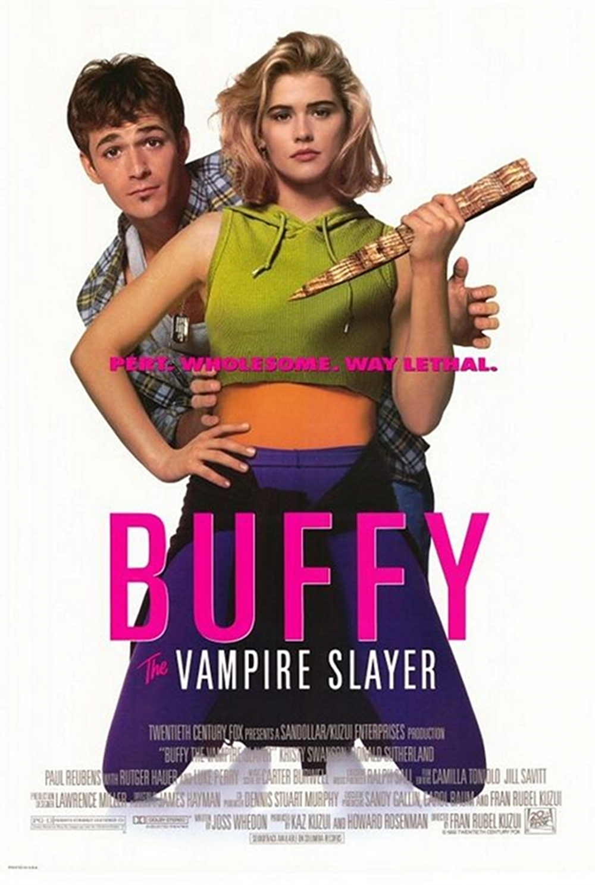

O escritor Joss Whedon diz que "Rhonda - A Garçonete Imortal" foi realmente a primeira encarnação do conceito de Buffy, apenas a ideia de uma mulher que parece ser completamente insignificante que acaba por ser extraordinária. " Esta ideia, no início, evoluíu para Buffy, que desenvolveu para inverter a fórmula de Hollywood: "A garotinha loira que entra em um beco escuro e é morta em cada filme de terror." Whedon queria "subverter essa ideia e criar alguém que seja um herói." Ele explicou: " A primeira missão do show foi a alegria de poder feminino: tê-lo, usá-lo, compartilhá-lo.
O conceito foi visitado por meio de script de Whedon para o filme de 1992, Buffy the Vampire Slayer, que contou com Kristy Swanson no papel-título. O diretor, Fran Rubel Kuzui, viu-o como uma comédia "cultura pop sobre o que as pessoas pensam sobre vampiros." Whedon discordou: "Eu tinha escrito este filme assustador sobre uma mulher com poderes, e eles transformaram em uma grande comédia. Foi esmagador." O script foi elogiado dentro da indústria, mas o filme não.
Vários anos depois, Gail Berman, um executivo da Fox, se aproximou de Whedon para desenvolver o seu conceito de Buffy em uma série de televisão. Whedon explicou que eles disseram, "Você quer fazer um show?" E eu pensei, 'High school como um filme de terror ". E assim, a metáfora tornou-se o conceito central por trás de Buffy, e foi assim que eu vendi ele. " Os elementos sobrenaturais na série manteviram-se como metáforas para angústias pessoais associadas com a adolescência e idade adulta Whedon passou a escrever e, e um fundo de vinte e cinco minutos foi dado para o piloto não exibido que foi mostrado para as redes e acabou sendo vendido à rede WB. Este último promoveu a estreia da série de clipes da Caça-Vampiros, e o primeiro episódio foi exibido em 10 de março de 1997.
Buffy the Vampire Slayer (Buffy, a Caça-Vampiros, no Brasil, e Buffy - Caçadora de Vampiros, em Portugal) foi uma série de televisão estadunisense de drama sobrenatural criada por Joss Whedon com a sua Mutant Enemy Productions e com os posteriores co-produtores executivos sendo Jane Espenson, David Fury, e Marti Noxon. A série estreou em 10 de março de 1997, no The WB e concluiu em 20 de maio de 2003, na UPN. A narrativa segue a vida de Buffy Summers (Sarah Michelle Gellar), a mais recente numa linha de jovens mulheres conhecidas como Caçadoras. As Caçadoras são escolhidas pelo destino para a batalha contra vampiros, demónios, e outras forças das trevas. Tal como anteriores Caçadoras, Buffy é auxiliada por um Conselho de Observadores, que orienta, ensina, e as conduz. Contrariamente às suas antecessoras, Buffy tinha um círculo de amigos leais, que se tornou conhecido como o "Scooby Gang".
A série alcançava normalmente entre quatro e seis milhões de telespectadores nas exibições originais. A série posicionou-se sempre entre os programas mais vistos do canal e ajudou o novo e pequeno canal WB Television Network a subir audiometricamente. A série foi positivamente aclamada pela crítica. No seu canal de origem, The WB, atingiu recordes de audiência. Foi classificada como a 41ª melhor série de todos os tempos na lista (de entre 50) da revista TV Guide, bem como na 2ª na lista dos 50 melhores programas de sempre da Revista Empire. Buffy também foi votada como 3ª série com forte estatuto de culto da Revista TV Guide e incluída na "Time Magazine's" entre os 100 melhores programas de TV de todos os tempos. Foi nomeada para os Emmy e os Globos de Ouro. A rede WB cessou a operação a 17 de Setembro de 2006 após uma "homenagem" às suas "mais memoráveis séries", incluindo o episódio piloto de Buffy e a sua série derivada Angel. O sucesso de Buffy levou à venda de centenas de produtos, incluindo romances, banda desenhada, e e jogos de vídeo, entre outros. A série recebeu atenção em fandom, dos fãs, tendo já sido parodiada e tem influenciado a direcção de outras séries televisivas.
O Filme

O Filme que fracassou por culpa dos produtores que transformaram ele numa comédia pastelão e sem graça
O filme foi lançado cinco anos antes da série, em 1992. Foi escrito pelo mesmo Joss Whedon da série, porém ele mesmo afirma que estragaram seu roteiro, tornando o filme em uma comédia pastelão. Os eventos ocorridos nesse filme não são considerados canônicos, porém pode-se tirar algumas referências dele, como Buffy ser uma residente de Los Angeles, ser uma menina do ensino médio, e ser obviamente a Caça-Vampiros sob a tutela de um sentinela - Merrick Jamison-Smythe (Donald Sutherland), que também aparece no seriado, durante o episódio Becoming. No elenco estão Kristy Swanson, Donald Sutherland e Luke Perry.
Curiosidades
Joss Whedon e Sarah Michelle Gellar decidiram por terminar a série televisiva em sua 7.ª Temporada. A atriz que interpretava Buffy contou posteriormente que desejava aprofundar sua carreira cinematográfica, que na época era conhecida por estrelar filmes de suspense/terror como Eu Sei o Que Vocês Fizeram no Verão Passado (I Know What You Did Last Summer) e o drama cômico Segundas Intenções (Cruel Intentions). Sarah também declarou que interpretar Buffy durante 7 anos acarretou em grande cansaço devido as diversas sequências de ação em meio ao drama central da série.
Em entrevista para uma revista americana, Sarah Michelle Gellar chegou a afirmar que odiava ser confundida pelo público pelo nome de sua personagem. Posteriormente, ela alegou que havia amadurecido, e que entendia o carinho dos fãs.
Joss Whedon e seus produtores não acreditavam no sucesso da série, (já que o filme de 1992 havia sido um fiasco), por isso a série estreou na mid-season de 1997, e com apenas 12 episódios, mas ao contrário do que pensava seu criador, a série foi um sucesso.
Depois de decidido que Smallville contaria a vida de Clark Kent ainda jovem, a The WB solicitou que a série fosse uma mistura de gêneros entre Buffy e Dawson's Creek (Outra série de sucesso do canal na época). Isto porque a ideia era juntar paranormalidade com dramas adolescentes. A ideia deu certo, e Smallville rendeu 10 temporadas de sucesso.
Existem boatos de que Amber Benson teria recusado participar do episódio "Conversas Com Mortos" (Conversations With Dead People). Isto porque ela teria ficado ressentida com o final de sua personagem Tara Maclay, durante a 6.ª Temporada. Para suprir sua falta no episódio, a atriz Azura Skye foi convidada para reprisar seu papel como Cassie Newton (A garota que Buffy tentou salvar episódios antes) na forma do Primeiro Mal (The Fist Evil), fazendo menção a Tara para persuadir Willow (Alyson Hannigan).
A Fox Brasileira confirmou que não possui mais os direitos de publicação de Buffy a Caça Vampiros e seu spinn-off, Angel no Brasil, não podendo assim lançar as demais temporadas de ambas as séries.
A Netflix brasileira disponibilizou todas as temporadas de Buffy a Caça Vampiros, com dublagem original brasileira entre os anos de 2013 à julho de 2017, quando saiu do seu catálogo.
Todos os episódios de fim de temporada foram escritos por Joss Whedon, exceto "O Túmulo" (Grave) da 6ª temporada.
Buffy, Willow, Xander, Angel e Giles são os únicos personagens a aparecer no primeiro e no último episódio da série.
No último episódio, todos os atores principais de criações de Joss aparecem: Sarah Michelle Gellar (Buffy), David Boreanaz (Angel), Nathan Fillion (Caleb) e Eliza Dushku (Faith).
A personagem de Buffy foi inspirada na mutante Kitty Pride, de X-Men.
Sunnydale é uma cidade ficcional que fica na Califórnia, e Joss Whedon a criou pensando em Santa Bárbara.
Apesar do sotaque de Spike, James Marsters não é britânico, e sim, americano de Modesto, Califórnia.
Durante a exibição da série, e mesmo após o seu término, foi cogitada diversas vezes a possibilidade de serem criados mais dois sppin-offs de Buffy. Um deles estaria centrado na história do vampiro Spike (James Marsters), o outro, que teve até título cogitado (Ripper), estaria focado em contar a história de Rupert Giles antes de se tornar sentinela, durante sua fase rebelde em que tinha o apelido de "Extripador".
O nome da banda de Oz, Dingoes Até My Baby, foi retirada de um episódio da série Seinfeld.
As músicas interpretadas por essa banda são na verdade do Four Star Mary.
Seth "Oz" Green finge bem, mas ele não sabe tocar guitarra.
A primeira vez que Dingoes Até My Baby apareceu tocando no Bronze foi no episódio "A Múmia Inca" (Inca Mummy Girl), o quarto episódio da segunda temporada.
Cordelia Chase já "ficou" com o vocalista da banda, o que é mostrado no episódio "A Múmia Inca" (Inca Mummy Girl).
O termo "Scooby Gang", apelido da turma de Buffy, foi usado pela primeira vez na segunda temporada, no episódio "O Que é Que Eu Faço – Parte 1" (What’s My Line? - Part 1).
No filme Buffy, A Caça-Vampiros de 1992, a personagem título era uma garota mais velha, já no último ano do colegial, diferente do seriado, onde Buffy, apesar dos eventos que precedem o primeiro episódio serem basicamente os mesmos do filme, ainda está no primeiro ano.
Spike matou duas caça-vampiros em sua existência centenária.
O endereço da Buffy completo é 1630 Revello Drive, Sunnydale, California.
Durante as sete temporadas, foram mostradas as mortes de 143 vampiros, 74 demônios e 2 humanos, mortos por Buffy.
A temporada mais sangrenta foi a terceira, em que Buffy matou 43 vampiros e 17 demônios.
Buffy serviu de inspiração para diversos filmes pornôs; alguns dos títulos mais conhecidos são Buffy the Vampire Layer, Muffy The Vampire Slayer e uma paródia adulta e mais fiel à série e TV, com o mesmo título de Layer, prevista para ser lançada em 2011.
Os diversos personagens britânicos em Buffy se devem ao fato de Joss Whedon ter morado alguns anos na Inglaterra, e formado no Winchester College.
A atriz que interpreta Joyce Summers (a mãe de Buffy) se chama Kristine Sutherland, mas ela não tem nenhum parentesco com Kiefer "Jack Bauer" Sutherland. Seu nome real é Kristine Young. Fã do ator Donald Sutherland (pai de Kiefer), ela deu ao seu gato o nome de Donald.
Como já existia outra atriz chamada Kristine Young, resolveu adotar o sobrenome Sutherland - em homenagem ao Donald e ao seu gato.
O termo "Buffyverse", ou "Buffyverso" foi criado pelos fãs como uma forma de se referenciar ao universo mostrado na série.
A tatuagem de David Boreanaz é falsa, feita apenas para o personagem Angel.
Sarah Michelle Gellar fez, inicialmente, o teste para ser Cordelia Chase. Mas decidiu tentar ficar com o papel de Buffy, pelo qual Joss Whedon a fez testar 11 vezes. Charisma Carpenter, Mercedes McNab, Julie Benz e Julia Lee fizeram o teste para ser Buffy e, embora nenhuma tenha ganhado o papel principal, receberam outros papéis de destaque nas séries Buffy e Angel.